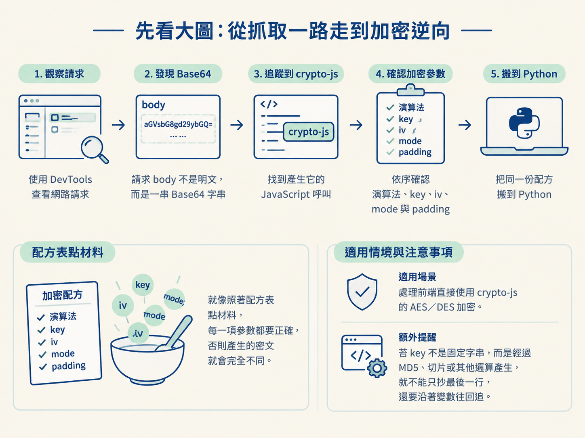
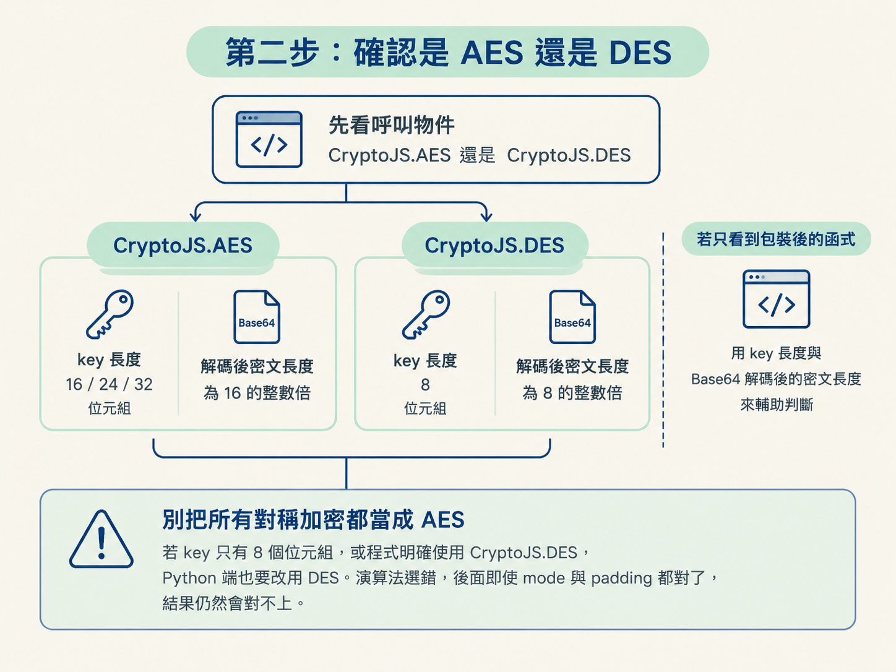
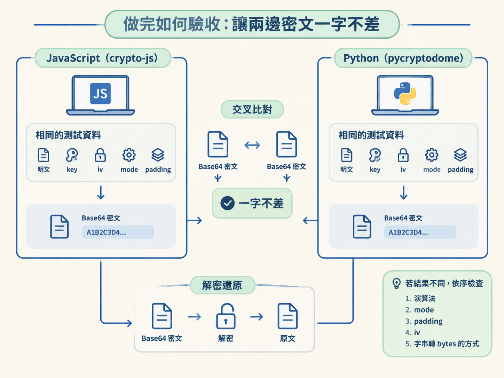

這一節要完成一個可以直接驗收的目標：從 crypto-js 的 AES／DES 程式碼中找出 key、iv、mode 與 padding，再用 Python 的 pycryptodome 重現相同的加解密流程。
做完之後，你不只要能解出原文，還要能讓 JavaScript 與 Python 在相同參數下產生一模一樣的密文。這樣才表示 Python 程式真的能拿去對接介面。
分析真實網站時，通常先在 DevTools 觀察請求。如果請求 body 不是可讀的明文，而是一串 Base64 字串，就要繼續追到產生它的 JavaScript。
找到 crypto-js 的呼叫後，工作就像照著配方表點材料：先確認演算法，再找出 key、iv、mode 與 padding，最後把同一份配方搬到 Python。只要其中一項抄錯，做出來的密文就會完全不同。
這套方法適合處理前端直接使用 crypto-js 的 AES／DES 加密。若 key 不是固定字串，而是經過 MD5、切片或其他運算產生，就不能只抄最後一行，還要沿著變數往回追。

pip install pycryptodome -i https://pypi.tuna.tsinghua.edu.cn/simple/。先追到真正執行加密的位置。看到 crypto-js 時，不必一開始就讀完整份 JavaScript；先鎖定 CryptoJS.AES.encrypt 或 CryptoJS.DES.encrypt，再看傳進去的參數。
以下是一段典型的 AES 加密程式。核心是 CryptoJS.AES.encrypt，前面的程式則是在準備 key、iv 與明文：
const CryptoJS = require("crypto-js")
// 密钥（128位，16字节）
var key = CryptoJS.enc.Utf8.parse('0123456789abcdef');
// 初始化向量（IV）（128位，16字节）
var iv = CryptoJS.enc.Utf8.parse('1234567890abcdef');
// 待加密的数据
var plaintext = 'Hello, bobo!';
// 进行AES-128加密，使用CBC模式和PKCS7填充
var encrypted = CryptoJS.AES.encrypt(plaintext, key, {
iv: iv,
mode: CryptoJS.mode.CBC,
padding: CryptoJS.pad.Pkcs7
});
// 获取加密后的密文
var ciphertext = encrypted.toString();
console.log(ciphertext);照著呼叫位置往外讀，可以依序抄出四項關鍵參數：
CryptoJS.enc.Utf8.parse('0123456789abcdef')。Utf8.parse 會把字串轉成 crypto-js 使用的位元組資料；真正要追的是括號裡的內容。CryptoJS.enc.Utf8.parse('1234567890abcdef')，同樣是 16 個字元。CryptoJS.mode.CBC。CryptoJS.pad.Pkcs7。這裡的 key 是 16 個字元，對應 128 位元的 AES 密鑰。
真實網站不一定會把 key 直接寫在引號裡。若你看到的是 Utf8.parse(key)，就要繼續往回找 key 的來源。它可能來自 md5(...)，也可能是 a.slice(0,16) 的結果。只抄變數名稱，就像只拿到食譜上的「醬汁適量」，還不足以在 Python 重做。
抄參數之前，先確認演算法。最直接的線索是呼叫物件；如果名稱被包進其他函式，再用 key 與密文區塊長度交叉檢查。
| 線索 | AES | DES |
|---|---|---|
| 呼叫的物件 | CryptoJS.AES | CryptoJS.DES |
| key 長度 | 16／24／32 位元組 | 8 位元組 |
| 密文長度特徵 | 16 的整數倍 | 8 的整數倍 |
若程式直接呼叫 CryptoJS.AES 或 CryptoJS.DES，就以呼叫物件分流。若只看到包裝後的函式，才用 key 長度與 Base64 解碼後的密文長度輔助判斷。
不要把所有對稱加密都當成 AES。當 key 只有 8 個位元組，或原始程式明確使用 CryptoJS.DES，Python 端也要改用 DES。演算法選錯，後面即使 mode 與 padding 都抄對，結果仍然對不上。

參數確認後，Python 端依序完成四件事：把 key 與明文轉成 bytes、用 PKCS7 補齊明文、建立 CBC 加密物件，最後把二進位密文轉成 Base64。
下面這份 Python 範例使用自己的明文與 iv，和前面的 JavaScript 範例不是同一組測試資料。先看清楚每一步；正式比對時，再把兩邊的 key、iv、明文、mode 與 padding 全部改成相同值。
from Crypto.Cipher import AES
from Crypto.Util.Padding import pad
import base64
key = '0123456789abcdef'.encode() # 秘钥: 必须16字节
iv = b'abcdabcdabcdabcd' # 偏移量：16位/字节(字节类型)
text = 'alex is a monkey!' # 加密内容
#设置加密内容的长度填充（位数为16的整数倍）
text = pad(text.encode(), 16)
#创建加密对象
aes = AES.new(key, AES.MODE_CBC, iv) # 创建一个aes对象
en_text = aes.encrypt(text) # 加密明文
print("aes加密数据:::", en_text) #返回二进制类型数据
#二进制密文转换成字符串格式
en_text = base64.b64encode(en_text).decode() # 将返回的字节型数据转进行base64编码
print(en_text)逐行拆開來看：
'0123456789abcdef'.encode() 把 key 從字串轉成 bytes。AES key 的長度只能是 16、24 或 32 位元組；這裡是 16 位元組，也就是 AES-128。長度不符時，AES.new 會直接報錯。iv = b'abcdabcdabcdabcd' 建立 16 位元組的 iv。這份程式使用 CBC，因此建立加密物件時必須提供 iv。text.encode() 先把明文轉成 bytes，pad(..., 16) 再用 PKCS7 將長度補成 16 的整數倍。這對應 JavaScript 裡的 CryptoJS.pad.Pkcs7。AES.new(key, AES.MODE_CBC, iv) 建立 AES／CBC 加密物件。若原始程式使用 ECB，Python 端就不該照抄 CBC，也不需要傳入 iv。aes.encrypt(text) 產生二進位密文。最後用 base64.b64encode(...).decode() 轉成可放進請求的字串。這個寫法適用於原始 JavaScript 明確使用 AES、CBC 與 PKCS7 的情況。若 DevTools 裡看到的是 DES、ECB 或不同 padding，就要跟著更換，不能只替換 key。
解密就像把包裹一層一層拆回去。先將 Base64 還原成二進位密文，再用相同的 key、iv 與 mode 解密，最後移除 padding 並轉回文字。
from Crypto.Cipher import AES
import base64
from Crypto.Util.Padding import unpad
key = '0123456789abcdef'.encode()
iv = b'abcdabcdabcdabcd'
aes = AES.new(key, AES.MODE_CBC, iv)
#需要解密的文本
text = 'X/A0fy9S7+kUI3HYQRKO46WTlid6T1DBhXutwmPdboY='.encode()
#将密文数据转换为二进制类型
ecrypted_base64 = base64.b64decode(text)
source = aes.decrypt(ecrypted_base64) # 解密
#未填充数据
print("aes解密数据:::", source.decode())
#取消填充数据
print("aes解密数据:::", unpad(source, 16).decode())base64.b64decode(text) 拆掉傳輸用的 Base64，拿回真正的二進位密文。aes.decrypt(ecrypted_base64) 使用相同的 AES／CBC 參數解密。unpad(source, 16) 移除 PKCS7 填充。.decode() 把 bytes 還原成文字。若直接對解密結果執行 source.decode()，尾端可能出現填充留下的控制字元。要取得乾淨的原文，應使用 unpad(source, 16).decode()。
解密時的 key 與 iv 必須和加密時完全相同。尤其是 iv，不一定每次錯誤都會直接報錯；你可能只會看到無法還原的內容。因此遇到亂碼時，不要立刻斷定演算法錯了，先逐項核對 key、iv、mode 與 padding。
回到 JavaScript，可以看到解密端仍然使用同一組 key、iv、CBC 與 PKCS7。Python 端也必須逐項對上：
const CryptoJS = require("crypto-js")
// 密钥（128位，16字节）
var key = CryptoJS.enc.Utf8.parse('0123456789abcdef');
// 初始化向量（IV）（128位，16字节）
var iv = CryptoJS.enc.Utf8.parse('1234567890abcdef');
// 密文数据
var encrypText = 'GYc9oxlZB/PeyfFG3ppK6Q==';
// 进行加密，使用CBC模式和PKCS7填充
var decrypted = CryptoJS.AES.decrypt(encrypText, key, {
iv: iv,
mode: CryptoJS.mode.CBC,
padding: CryptoJS.pad.Pkcs7
});
// 解密
var plaintext = decrypted.toString(CryptoJS.enc.Utf8);
console.log(plaintext);JavaScript 的 CryptoJS.AES.decrypt 會依設定處理解密與填充，接著用 decrypted.toString(CryptoJS.enc.Utf8) 轉成可讀文字。Python 則把這些動作明確拆成 decrypt、unpad 與 decode。
驗收時不要直接混用上面幾份範例，因為它們的明文與 iv 並不完全相同。請先固定同一組測試資料：
'alex is a monkey!'0123456789abcdefabcdabcdabcdabcd
加密結果相同，而且密文能解回原文，才代表整個流程閉合。之後遇到真實網站的加密 body，就能把從 JavaScript 找到的參數搬進 Python，用來產生請求資料或解開回應內容。
從 crypto-js 還原對稱加密，可以照固定順序進行：先確認呼叫的是CryptoJS.AES還是CryptoJS.DES，再追出 key 與 iv，接著核對 mode 和 padding。Python 加密流程是pad → AES.new → encrypt → b64encode；解密流程則是b64decode → decrypt → unpad → decode。最後用完全相同的參數交叉測試，兩邊密文一字不差才算完成。
對稱加密處理完後，下一條常見路線是非對稱加密。它不再由雙方共用同一把 key，而是使用公鑰加密、私鑰解密，常見於登入頁的密碼欄位。下一步會先弄清楚為什麼需要兩把 key，再看如何用 Python 重現。